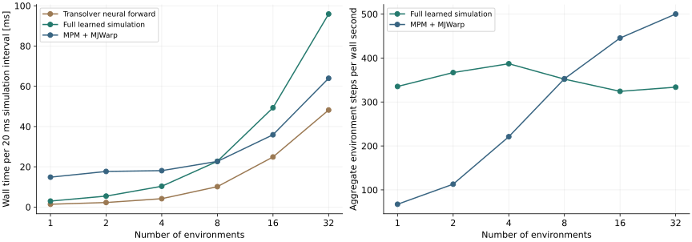
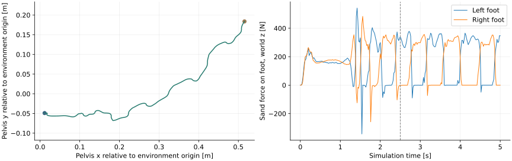

20 October 2026 · RTX 5090 · measured implementation, followed by a proposed dataset.
Optimization follow-up: Compiled Transolver, Torch versus Warp graph capture, and five-second numerical agreement. Neural inference improves by up to 1.81×; full simulation improves by up to 1.23×. Compilation remains optional because coupled trajectories can diverge.
Conclusion: the full learned simulation is 5.0× faster than MPM for one environment, reaches similar latency at eight environments, and is slower at 16 and 32 environments. Transolver is batched, but feature generation, force estimation and rigid integration still dispatch separately for each environment. The current implementation does not yet provide the batch-throughput advantage needed for large-scale robot training.
Each environment contains 16,384 particles and one dynamic shovel. This benchmarks the existing shovel model, not the larger G1 scene below. Each timed interval covers 20 ms of simulation: one learned particle step plus four rigid steps, or four coupled MPM–MJWarp steps. The MPM solver uses a limit of 25 iterations and a 0.04 m grid.

| Environments | Neural forward [ms] | Full learned [ms] | MPM + MJWarp [ms] | MPM time / learned time |
|---|---|---|---|---|
| 1 | 1.40 | 2.98 | 14.85 | 4.98× |
| 2 | 2.26 | 5.45 | 17.70 | 3.25× |
| 4 | 4.17 | 10.33 | 18.10 | 1.75× |
| 8 | 10.14 | 22.73 | 22.68 | 1.00× |
| 16 | 24.89 | 49.35 | 35.92 | 0.73× |
| 32 | 48.21 | 95.90 | 63.98 | 0.67× |
The captured neural forward grows from 1.40 to 48.21 ms across this range. Thus the scaling limitation is not solely the force estimator. This experiment identifies where to optimize; it does not establish an inherent limit of Transolver.
| Environments | Features + batch copy [ms] | Neural network [ms] | Particle update + forces + rigid steps [ms] |
|---|---|---|---|
| 1 | 0.24 | 1.40 | 1.36 |
| 2 | 0.46 | 2.19 | 2.62 |
| 4 | 0.97 | 4.18 | 5.32 |
| 8 | 2.23 | 10.15 | 10.32 |
| 16 | 3.62 | 24.33 | 22.56 |
| 32 | 7.16 | 45.48 | 44.26 |
CUDA-event medians from a separate ten-step instrumented continuation. The continuation uses later particle states; these columns should not be summed to reproduce the primary wall-time table exactly.
Next optimization: batch the particle feature kernels, analytical force solver and MJWarp worlds into shared buffers. Profile the batched neural forward separately for memory traffic and attention/MLP costs. Attention is isolated per environment; batching must not mix sand particles from different worlds.
All raw timing samples · Benchmark script · Run commands · Source hashes
The native MPM–MJWarp task runs a pretrained G1 policy through its actuators. The robot starts on the sand, with no prescribed body trajectory. This five-second example commands forward motion, then adds lateral motion and turning at 2.5 s.

cd ~/isaac/IsaacLab
export PYTHONPATH="$HOME/isaac/particle_nerd/worktrees/IsaacLab-scalability/examples${PYTHONPATH:+:$PYTHONPATH}"
uv run --no-sync python -m particle_nerd.data_collection.g1_reference \
--duration 5 --mode policy --command 0.15 0 0 \
--command-end 0.1 0.05 0.25 --switch-time 2.5
uv run --no-sync python -m particle_nerd.data_collection.g1_reference \ --headless --num-envs 2 --duration 5 --mode policy \ --command 0.15 0 0 --command-end 0.1 0.05 0.25 --switch-time 2.5 \ --output /tmp/g1-policy-reference.hdf5
Two-environment recording was tested for 0.2 s with perturbed policy actions. A single-environment policy recording completed five seconds. Larger G1 batches are not yet validated. The same command schedule is currently applied to each environment in a batch; initial states differ. Native termination stops the pilot batch and invalidates reset transitions.
Collection script · Commands: walking, standing, policy perturbations, zero/random actions, recording · Pilot measurements
Current proposal: 500 five-second trajectories on 3 × 3 × 0.3 m sand, recording at 200 Hz while the policy remains at 50 Hz. The earlier 5,000-trajectory budget is deferred. At approximately 89,000 particles per environment, estimated storage is 1.07 TB for FP32 particle positions and velocities plus the small rigid-state records; remote storage is required.
View integrated XY paths for all 500 trials → Includes motion-group plots, an individual-trial viewer, and the exact command schedules. These are planned command paths, not simulated robot motion.
Split the trials into 400 training, 50 validation and 50 test episodes. Start with 50 trials to verify recording and coverage, then expand to 500. Derive 100 Hz and 50 Hz samples from the 200 Hz records to compare model timestep choices without duplicating the stored dataset.
Coverage: 350 policy locomotion trials, 75 perturbed-policy trials, 50 policy-standing trials and 25 zero/random joint-action diagnostics. Initial heading is randomized in the new plan. Native falls and incomplete episodes must be tracked separately.
The reference video and measured file size above still describe the completed 6 × 2 m, 50 Hz pilot. The revised terrain, initial-heading randomization, schedule loading and physics-substep recording hook have not yet been applied to that recorder. No 500-trial collection has started.
Five model tests pass, including batched-versus-independent predictions and isolation of different environments. All 18 benchmark cases completed. Changed-file formatting/lint hooks pass; the repository-wide changelog gate is blocked by existing fragment-format and missing-fragment issues outside these example changes.